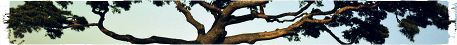

Abraham Lincoln once said, "Give me six hours to chop down a tree and I will spend the first four sharpening the axe."
Aunt Margaret used to say, "If you dream of a forest, you'd better learn how to plant a tree."
data.tree says, "No matter if you are a lumberjack or a tree hugger. I will be your sanding block, and I will be your seed."